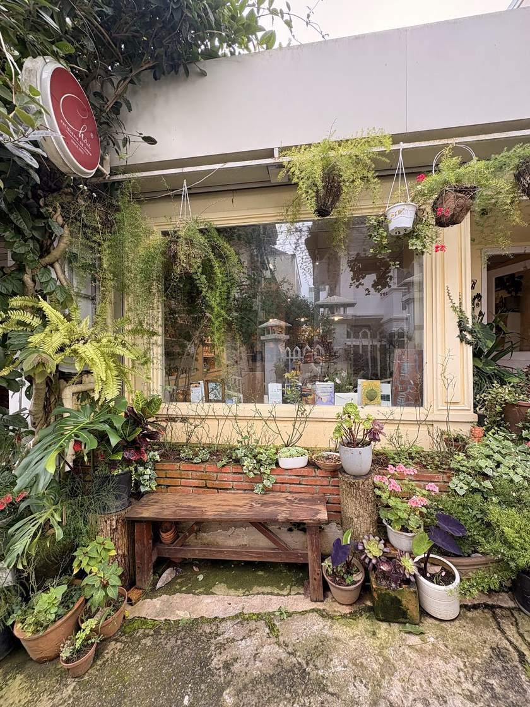
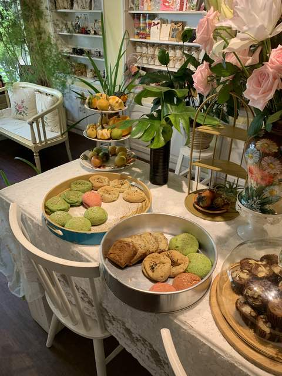
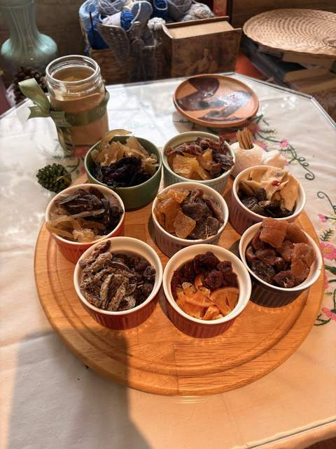
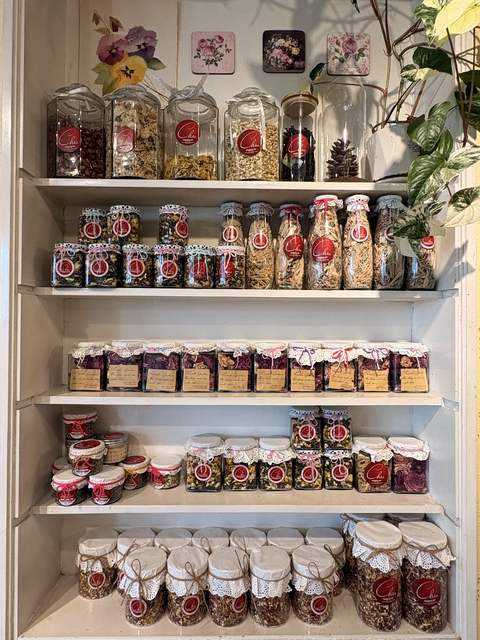

Bánh bông lan chuối
Món khách khen nhiều nhất: bột bánh xốp mềm, thơm, ngọt vừa phải.
Tiệm bánh nhỏ · Đà Lạt
“Khi đến tiệm, bạn có thể ngửi được mùi thơm ngọt ngào của những chiếc bánh mới ra lò. Bạn có thể xem tiệm là nhà… Tiệm luôn có sẵn trà và mứt thương mời bạn.”
— Lời chủ tiệm


Câu chuyện của tiệm
Tiệm bánh Thanh Châu (Patisserie de Chau) nằm ở 177 bis Ba Tháng Hai, đối diện Điện Lực Đà Lạt. Phía trước tiệm là cả một khoảng cây xanh, bên trong là bánh, sách, trà và hoa dưới ánh đèn vàng nhẹ.
Tiệm làm bánh homemade ít ngọt, mứt tự làm và luôn có sẵn trà mời khách. Có khách quen đã ăn bánh ở đây gần 9 năm và vẫn khen bánh “đúng vị hồi xưa”.
Đặt trước
Chỉ cần cho tiệm biết tuổi, giới tính và sở thích của người nhận, tiệm sẽ làm bánh cho bạn. Có giao bánh tận nơi.
Gọi đặt bánh →
Workshop làm bánh cho bé và gia đình ngay tại tiệm. Vui lòng liên hệ trước để giữ chỗ.
Gọi hỏi lịch →
Thư viện ảnh
Khách nói gì
★★★★★“Quán ấm áp với bánh, sách, trà và hoa dưới ánh đèn vàng nhẹ và hương tinh dầu thoan thoảng. Mình thật sự thích chiếc bánh chuối và cupcake đã chọn, bột bánh xốp mềm, thơm, vị ngọt vừa phải. Trà được quán mời thơm nhẹ, ấm nóng. Thời gian như ngừng lại ở đây và nơi này!”
★★★★★“Tiệm bánh rất ngon đúng vị hồi xưa, mình ăn bánh ở đây chắc gần 9 năm, mỗi lần ghé đều chụp vài tấm hình vì góc nhỏ nào của tiệm cũng được chăm chút xinh xẻo. Tết sẽ có những hộp mứt gói độc đáo để tặng, Bánh dùng hoa tươi, cốt bánh quế thơm lừng, Đặc biệt bạn chủ dễ thương hiểu ý khách lắm, mình alo đặt bánh chỉ nói tuổi, giới tính, sở thích là bạn chủ tự làm, và bao giờ cũng vừa ý. Đến Đà Lạt, nên ghé một lần bạn nhé!”
★★★★★“Mình không giỏi về bánh. Nhưng có bạn đi cùng hiểu về bánh và khen tấm tắc. Bánh đúng là không ngọt. Mứt cũng tự nhiên, đặc biệt là mứt dâu tây xuất sắc. Trà olong thơm, ăn kèm bánh rất tuyệt. Không gian quán đủ nhỏ để chill, bình yên, chứ không lớn để mất đi cái chất của quán. 2 bạn nhân viên rất nhiệt tình tư vấn”
★★★★★“Mình đặt bánh ngũ vị kem bơ, bánh giao tới ngon lắm nên mình đã ghé quán để trải nghiệm thêm các loại bánh khác của tiệm. Tiệm nhỏ nhưng từng góc đều được trang trí tỉ mỉ, xinh lắm. Các bạn ở tiệm rất nhiệt tình, nói chuyện nhẹ nhàng, mời tụi mình thử mứt, trà, bánh đủ loại, mà vị nào cũng ngon, nhóm mình ai cũng mua một chút về làm quà. Lúc về tiệm có tặng thêm tụi mình cookie và dĩ nhiên là cookie cũng ngon :>”
★★★★★“Quán nhỏ xinh dễ thương, vibe gia đình. Bánh bông lan chuối ngon. Mọi người tới mua về không ah. Đằng trước trồng nhiều cây kiểng xinh xắn.”
Ghé tiệm